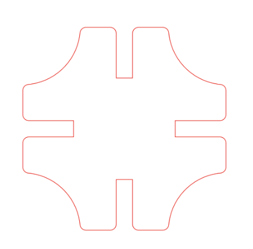
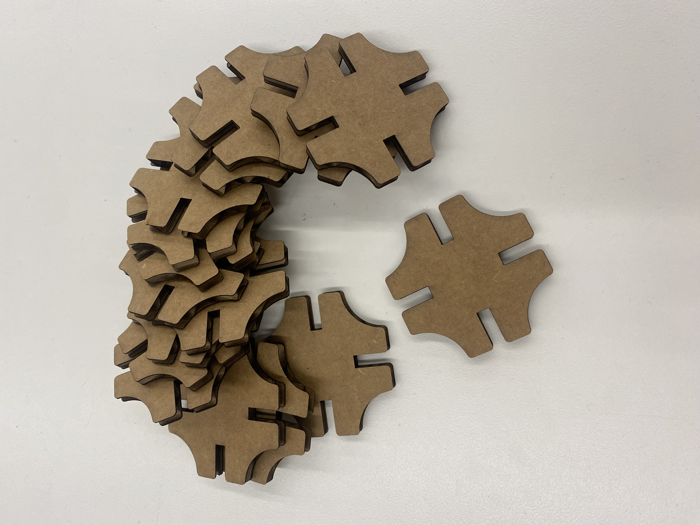
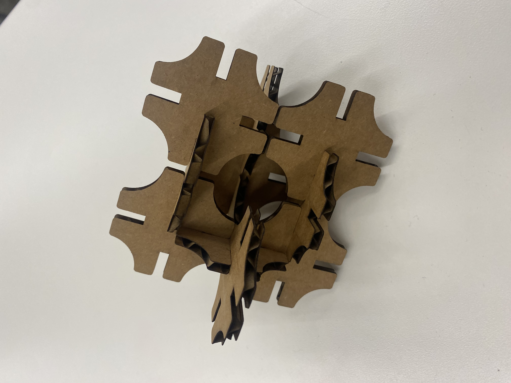

### Press Fit Construction Kit
## Prompt
Create a press-fit construction kit that can be assembled in multiple ways, and accounts for lasercutter kerf.
## Process
I wanted to print a shape which had curved and straight edges both for visual interest and because I liked watching the lasercutter navigate the varied faces. I sketched a square with circular cutouts at each corner and slots of width 4.05mm to account for a cardboard thickness of 4.1mm and kerf of roughly 0.05mm. I got a new computer this week so I no longer have the Fusion file, but the picture below shows the final pdf I sent to the printer.
## Final Product


<br>
### Fusion Tutorial
I worked through a tutorial which walked me through basic sketch commands. I have some prior experience with CAD and Fusion, but it was nice to review all of the commands, and it will be useful when I am modelling household objects. <div style="align-items: center; justify-content:center;"> [tutorial](https://www.youtube.com/watch?v=vVFYrBClkPc) </div>
### Modelling Objects
## Prompt
Select at least 2 household objects or components from the lab. Measure them using calipers, and model them in Fusion 360 or other program. Create an assembly using these components, and document your work on your webpage.
## Process